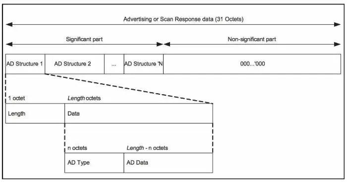
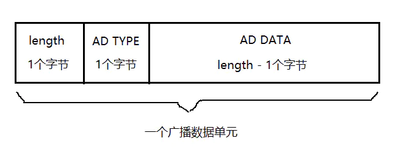
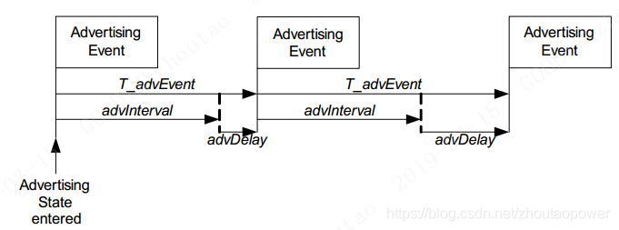

16. Zephyr - BLE 广播
此处介绍的广播是传统广播，不涉及扩展广播。
16.1. 广播数据
概念介绍
在传统广播里，广播包里携带的数据只有 31 个字节，一个经典的图示如下：

这 31 个字节又分为有效部分和无效部分。
有效部分也就是我们想要发送的数据，里面每一个数据单元都由一个 AD Structure 组成，N 个 AD Structure 共同填充了有效部分。
每个 AD Structure 又是由 Length + AD Type + AD Data（LTD）组成，图示如下：

Length： 这个数据单元的长度。
AD Type：广播数据单元的类型，蓝牙 SIG 联盟定义了一些标准类型。
AD Data：数据内容，需要根据 AD Type 来解析。
这样 BLE 传统广播的数据包内容基本介绍完了，接下来看看 Zephyr 里如何定义 AD Structure 的。
bt_data
struct bt_data {
uint8_t type;
uint8_t data_len;
const uint8_t *data;
};
bt_data 就是 Zephyr 蓝牙协议栈定义的 AD Structure，其中 type 是该数据单元的类型（AD Type），data 指向数据内容（AD Data）缓冲区的首地址，而 data_len 是数据内容（AD Data）缓冲区的首地址，不是前面介绍的数据单元的长度（Length），数据单元的长度（Length）协议栈会自动设置。
协议栈还提供了一系列的宏来帮助我们快速构造 bt_data。
BT_DATA
#define BT_DATA(_type, _data, _data_len) \
{ \
.type = (_type), \
.data_len = (_data_len), \
.data = (const uint8_t *)(_data), \
}
这个参数宏的参数和 bt_data 里的成员变量是一一对应的。
使用 BT_DATA(0x09, "name", sizeof("name")-1) 即可快速构造一个 bt_data，而且它的宏名称是相应的大写版本，方便记忆。
BT_DATA_BYTES
#define BT_DATA_BYTES(_type, _bytes...) \
BT_DATA(_type, ((uint8_t []) { _bytes }), \
sizeof((uint8_t []) { _bytes }))
有时候我们想要在定义 bt_data 时直接手动输入数据部分，让程序自己判断数据的长度，这个时候就可以用宏 BT_DATA_BYTES 了。这个参数宏将第 2 个参数及之后的参数全部放置到了 _bytes 里，然后用它构建了一个数组，并自动获取该数组的长度，从而达到了上述的目的。
例如：
static const struct bt_data ad[] = {
BT_DATA_BYTES(BT_DATA_FLAGS, BT_LE_AD_NO_BREDR),
BT_DATA_BYTES(BT_DATA_UUID16_ALL, 0xaa, 0xfe),
BT_DATA_BYTES(BT_DATA_SVC_DATA16,
0xaa, 0xfe, /* Eddystone UUID */
0x10, /* Eddystone-URL frame type */
0x00, /* Calibrated Tx power at 0m */
0x00, /* URL Scheme Prefix http://www. */
'z', 'e', 'p', 'h', 'y', 'r',
'p', 'r', 'o', 'j', 'e', 'c', 't',
0x08) /* .org */
};
16.2. 广播参数
概念介绍
BLE 设备是以一定间隔（Interval）来广播的，每一次广播就叫做广播事件（Advertising Event），如下图：

这里 advInterval 就是广播间隔，但实际上的 T_advEvent（广播事件）还加了一个 10ms 的伪随机数（advDelay）。
如果在这一次广播事件内，对端扫描到了这个广播，那么就可以进行一系列的交互了，否则只能等待下一次的广播事件。
bt_le_adv_param
struct bt_le_adv_param {
uint8_t id;
uint8_t sid;
uint8_t secondary_max_skip;
/** Bit-field of advertising options */
uint32_t options;
/** Minimum Advertising Interval (N * 0.625) */
uint32_t interval_min;
/** Maximum Advertising Interval (N * 0.625) */
uint32_t interval_max;
/**
* @brief Directed advertising to peer
*
* When this parameter is set the advertiser will send directed
* advertising to the remote device.
*
* The advertising type will either be high duty cycle, or low duty
* cycle if the BT_LE_ADV_OPT_DIR_MODE_LOW_DUTY option is enabled.
* When using @ref BT_LE_ADV_OPT_EXT_ADV then only low duty cycle is
* allowed.
*
* In case of connectable high duty cycle if the connection could not
* be established within the timeout the connected() callback will be
* called with the status set to @ref BT_HCI_ERR_ADV_TIMEOUT.
*/
const bt_addr_le_t *peer;
};
这里传统广播只需要关注 options，interval_min，interval_max 和 peer 即可。
options: 广播包的类型。
这里的类型定义了很多，我这里列几个常用的，更全面地需要参考代码。
BT_LE_ADV_OPT_CONNECTABLE：可连接的广播包。
BT_LE_ADV_OPT_USE_NAME：广播使用 GAP 设备名称。
BT_LE_ADV_OPT_SCANNABLE：可扫描的广播包。
BT_LE_ADV_OPT_DISABLE_CHAN_37：不允许在通道 37 打广播。
interval_min: 最小的广播间隔。
interval_max: 最大的广播间隔。
peer: 定向广播的地址。若该地址被设置，则广播包自动变为定向的，否则为不定向的。
协议栈也提供了辅助宏来帮助我们初始化广播参数。
BT_LE_ADV_PARAM_INIT
#define BT_LE_ADV_PARAM_INIT(_options, _int_min, _int_max, _peer) \
{ \
.id = BT_ID_DEFAULT, \
.sid = 0, \
.secondary_max_skip = 0, \
.options = (_options), \
.interval_min = (_int_min), \
.interval_max = (_int_max), \
.peer = (_peer), \
}
BT_LE_ADV_PARAM_INIT 宏传入选项，广播间隔以及对端地址来初始化一个传统广播的参数。
当前，我们一般不直接使用这个来初始化广播参数，协议栈提供了一种更便利的方式。
BT_LE_ADV_PARAM
#define BT_LE_ADV_PARAM(_options, _int_min, _int_max, _peer) \
((struct bt_le_adv_param[]) { \
BT_LE_ADV_PARAM_INIT(_options, _int_min, _int_max, _peer) \
})
协议栈利用 BT_LE_ADV_PARAM 来构造了一个 struct bt_le_adv_param 类型的数组，里面只有一个元素，并且该参数宏展开后的含义是该数组的数组名，也就是广播参数的首地址。
借助该参数宏，协议栈定义了一系列更便捷的宏供我们使用。
/* 可连接的，定向的广播包 */
#define BT_LE_ADV_CONN_DIR(_peer) BT_LE_ADV_PARAM(BT_LE_ADV_OPT_CONNECTABLE | \
BT_LE_ADV_OPT_ONE_TIME, 0, 0,\
_peer)
/* 可连接的，不定向的广播包 */
#define BT_LE_ADV_CONN BT_LE_ADV_PARAM(BT_LE_ADV_OPT_CONNECTABLE, \
BT_GAP_ADV_FAST_INT_MIN_2, \
BT_GAP_ADV_FAST_INT_MAX_2, NULL)
/* 可连接的，不定向的广播包，并且带有 GAP 设备名 */
#define BT_LE_ADV_CONN_NAME BT_LE_ADV_PARAM(BT_LE_ADV_OPT_CONNECTABLE | \
BT_LE_ADV_OPT_USE_NAME, \
BT_GAP_ADV_FAST_INT_MIN_2, \
BT_GAP_ADV_FAST_INT_MAX_2, NULL)
这里只列举出了这三个宏，全部的辅助宏感兴趣的可以去参考代码。如果没有我们需要的，我们自己也可以按照这个格式实现。
可以看出本质上就是借用 BT_LE_ADV_PARAM 来构建了一个 bt_le_adv_param 参数，并获取了其地址，只不过中间利用了一些宏的技巧而已。
16.3. 广播控制
协议栈提供了接口 bt_le_adv_start 来启动广播，bt_le_adv_update_data 来更新数据，bt_le_adv_stop 来停止广播。
bt_le_adv_start
int bt_le_adv_start(const struct bt_le_adv_param *param,
const struct bt_data *ad, size_t ad_len,
const struct bt_data *sd, size_t sd_len)
启动广播，并同时设置广播数据和扫描回复数据。
返回值：
0 表示成功，其他值表示失败。
参数：
param：广播参数，bt_le_adv_param 结构体类型的指针，可有上述辅助宏创建。ad,ad_len：广播数据数组的首地址，以及数组的长度。sd,sd_len: 扫描回复数据数组的首地址，以及数组的长度。扫描回复数据与广播数据一模一样。
例如：
static const struct bt_data ad[] = {
BT_DATA_BYTES(BT_DATA_FLAGS, BT_LE_AD_NO_BREDR),
BT_DATA_BYTES(BT_DATA_UUID16_ALL, 0xaa, 0xfe),
};
/* Set Scan Response data */
static const struct bt_data sd[] = {
BT_DATA(BT_DATA_NAME_COMPLETE, DEVICE_NAME, DEVICE_NAME_LEN),
};
{
...
bt_le_adv_start(BT_LE_ADV_CONN, ad, ARRAY_SIZE(ad),
sd, ARRAY_SIZE(sd));
...
}
bt_le_adv_update_data
int bt_le_adv_update_data(const struct bt_data *ad, size_t ad_len,
const struct bt_data *sd, size_t sd_len);
更新广播数据。
返回值：
0 表示成功，其他值表示失败。
参数：
ad,ad_len：广播数据数组的首地址，以及数组的长度。sd,sd_len: 扫描回复数据数组的首地址，以及数组的长度。扫描回复数据与广播数据一模一样。
bt_le_adv_stop
int bt_le_adv_stop(void);
停止广播。
返回值：
0 表示成功，其他值表示失败。